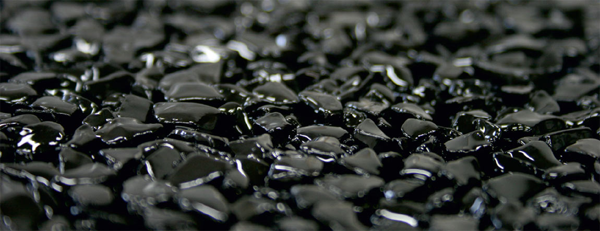
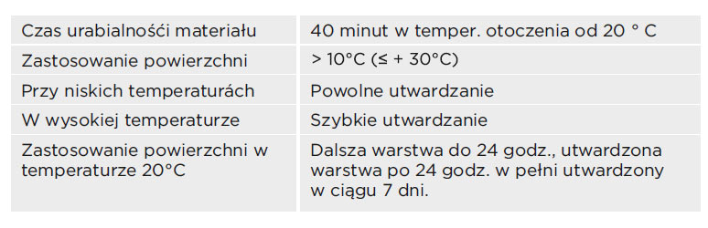
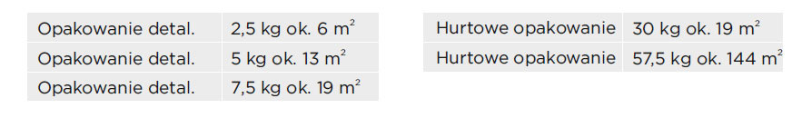

TopVital jest materiałem systemu TopStone przeznaczonym do rewitalizacji nawierzchni.
Dla przywrócenia połysku powierzchni (Na skutek eksploatacji w miejscach szczególnie obciążonych, może nastąpić zmatowienie powierzchni kamiennego dywanu)
Dwuskładnikowy, epoksydowy, bezbarwny, nie zawiera rozpuszczalników, przyjazny dla środowiska.
- Do wszystkich powierzchni w systemach TopStone
- TopVital wspólnie z materiałem TopStop zwiększa antypoślizgowość powierzchni (zastosowanie na stale wilgotne powierzchnie, schody, pochylnie, korytarze itp.)
- Możliwość wykorzystania TopVital przy tworzeniu efektów dekoracyjnych (brokat, kolorowa posypka itd.)
Wydłużenie żywotności kamiennego dywanu, wzmocnienie wytrzymałości układówTopStone, uzyskanie efektu „mokrego kamienia”

W czasie aplikacji i utwardzania TopVital nie można dopuścić do bezpośredniego kontaktu z wodą i środkami chemicznymi,(Nie stosować w czasie deszczu!). Do podgrzewania przestrzeni w aplikacji nie należy używać palników olejowych, palników gazowych itp., które tworząc w miejscu CO2 i pary wodne, które mają negatywny wpływ na jakość powierzchni.

Te wartości zużycia mogą się różnić w zależności od konkretnych warunków, I w zależności od konkretnego zastosowania.
W temperaturach> +12 ° C <+25 ° C, w suchym miejscu, w oryginalnym opakowaniu. Okres gwarancji-informacja na opakowaniu.
1. Przygotowanie podłoża – wyczyścić z brudu, kurzu i luźnych części, powierzchnię czyścić wodą pod ciśnieniem,szczotką,odkurzaczem
itp.
2. Przygotowanie narzędzi - pojemnik do mieszania dwóch składników spoiwa, zgodnie z instrukcjami, mieszadło,wałek malarski (welurowy,powierzchnia nylonowa z krótkimi włosami), ewentualnie pędzel.
3. Dokładnie wymieszać oba składniki TopVital przy użyciu mieszadła przez 3 minuty. Tak przygotowany materiał zużyć w ciągu 40 minut w temperaturze 20 ° C, za pomocą odpowiedniej techniki.
4. Na gotową czystą powierzchnię zastosować materiał TopVital wałkiem lub pędzlem. Zużycie ok.0,4 kg / m2.
TopVital zaraz po wymieszaniu nanosimy na powierzchnie. W przeciwnym wypadku przy następnym przemieszaniu (więcej niż po 5-10 min.) grozi ryzyko samoistnej gwałtownej reakcji egzotermicznej! Narzędzia i skórę z nieutwardzonej mieszanki należy oczyścić acetonem, utwardzoną masę wyczyścić mechanicznie – papierem ściernym, szlifowaniem, itp.